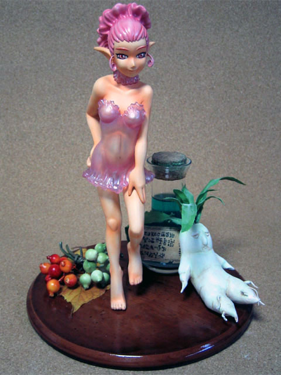
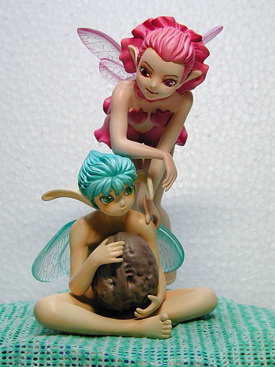

pretty good color ref picture
Go to: Schierke - Erica - Evarella (fairy) - Golem (mud creature)
Evarella (fairy)
okay ref picture (i DON'T like the colors in this picture, but that is what she
looks like)
pretty good color ref picture
- pink hair
- a soft pink is good, like above
- pink transparent wings
- the wings should stay pretty much transparent, but a hint
of pink would be nice
- pink dress
- the dress should also be mostly transparent. the only
part where it's not fully transparent is the skirt area, which covers her waist
- pink eyes
*note - all these pinks can be the same pink
PLACEMENT
it looks to me that evarella should have her left hand on schierke's right collar. i've only seen one paint up of this kit and the guy put evarella resting on schierke's staff, which i think looked strange =P. so collar it is!
Some other pictures...

- in this one above, the pink is pretty good, but maybe just SLIGHTLY too
purple.

- in this one above, the pink is too dark
And that's that!